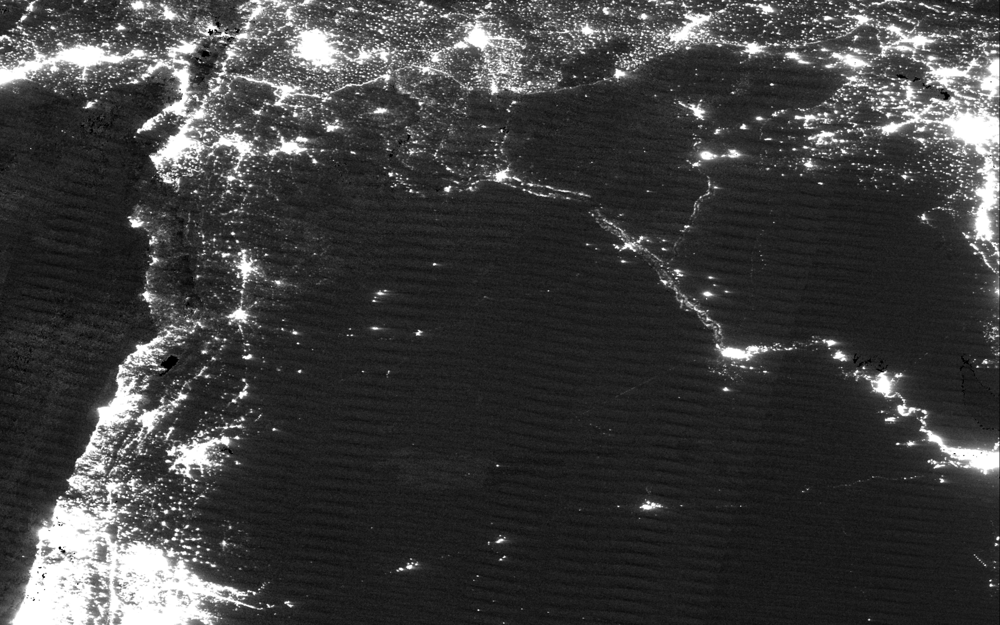
How fast is Syria's economy recovering after the fall of Bashar al-Assad? The answer depends on who you ask, and what you measure.
In March, the Syrian Center for Policy Research published a blunt verdict: real GDP growth in 2025 was "approximately three per thousand." Essentially zero. Agriculture had collapsed. Manufacturing had shrunk. The transitional government's optimistic projections, the SCPR argued, were "political propaganda, not scientific measurement."
The World Bank, in a macro-fiscal assessment released last June, was only slightly more hopeful. It forecast 1% real growth, hedged with what it called "extraordinarily high uncertainty."
But a different dataset tells a more complicated story.
NASA's VIIRS satellite photographs Earth every night, recording the light emitted by cities, towns and infrastructure. We analyzed 978 nightly images of Syria captured between January 2024 and December 2025, filtering for cloud cover, moonlight contamination and sensor artifacts.
A striking pattern emerges: parts of Syria are getting significantly brighter. Other parts are not.
Every night, the VIIRS instrument aboard NASA's Suomi NPP satellite records the light emitted by cities, infrastructure and industry. For countries where economic statistics are unreliable, nighttime light has become a standard proxy for economic activity, pioneered by Henderson et al. (2012) and now used routinely by the World Bank for conflict-affected states.
We processed 618 nightly observations of Syria across 2024 and 2025, filtering for cloud cover, moonlight contamination and orbital gaps. After filtering, we retain roughly 60 to 85 clean observations per governorate per year.
We average clean observations within each quarter, then compare the second half of each year (Q3 and Q4). Syria's transition began in December 2024. The H2 comparison isolates the period where the recovery had settled into a pattern.
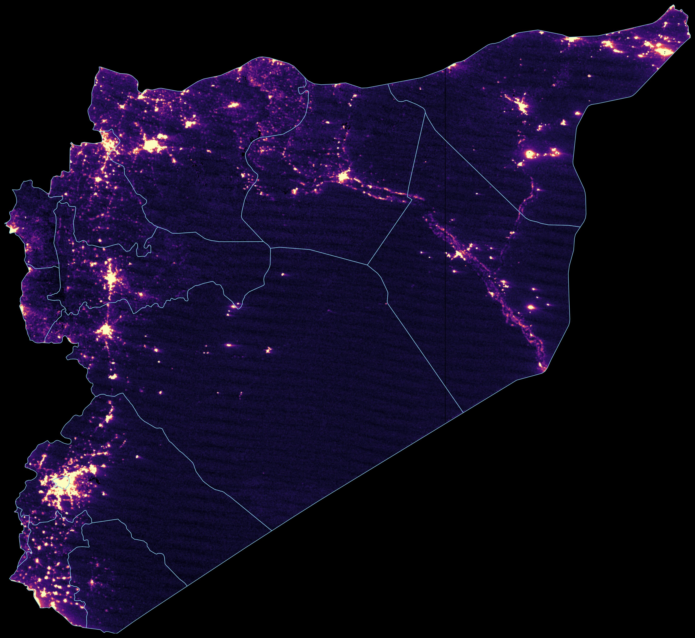
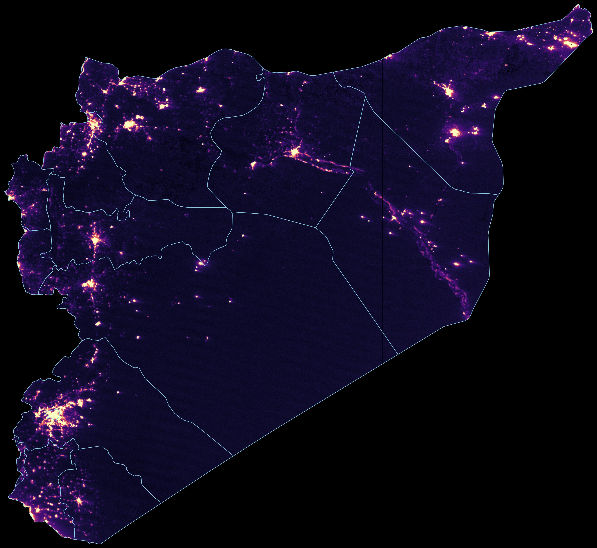
The national average conceals a country splitting in two directions.
Comparing H2 2025 against H2 2024, population-weighted luminosity across all 14 governorates rose +17.9%. Standard NTL-to-GDP elasticities imply GDP growth of roughly 5 to 14 percent nationally, far above either the SCPR or World Bank estimate. The wide range reflects genuine uncertainty in the elasticity parameter.
But that aggregate masks enormous variation.
The brightest gainers were formerly opposition-held, besieged or cut off under Assad. After the regime fell, trade routes reopened, diaspora money flowed back, and reconstruction began. Dar'a (+35%), birthplace of the uprising, leads as Jordan crossings reopened. Damascus (+29%) surged as the new seat of power. Idlib (+27%) and Aleppo (+27%) are nearly tied. Aleppo's industrial zones are lighting back up, and Idlib appears to be formalizing activity that was previously off the books.
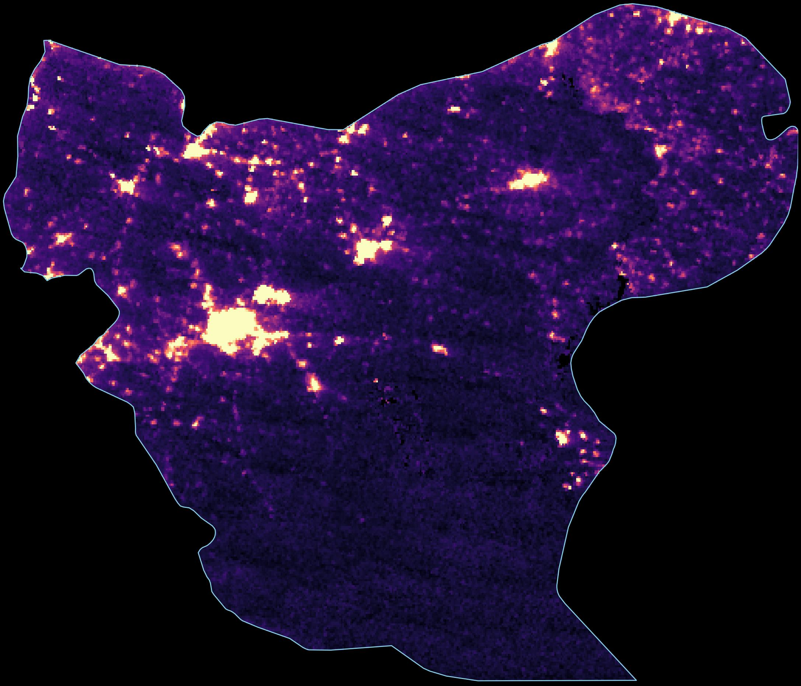
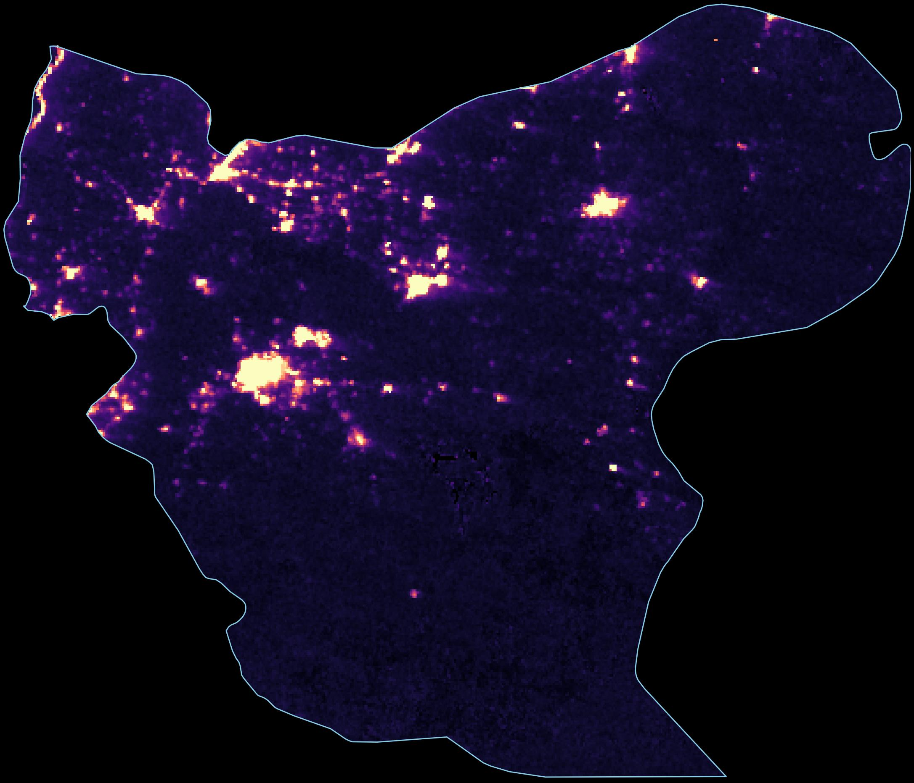
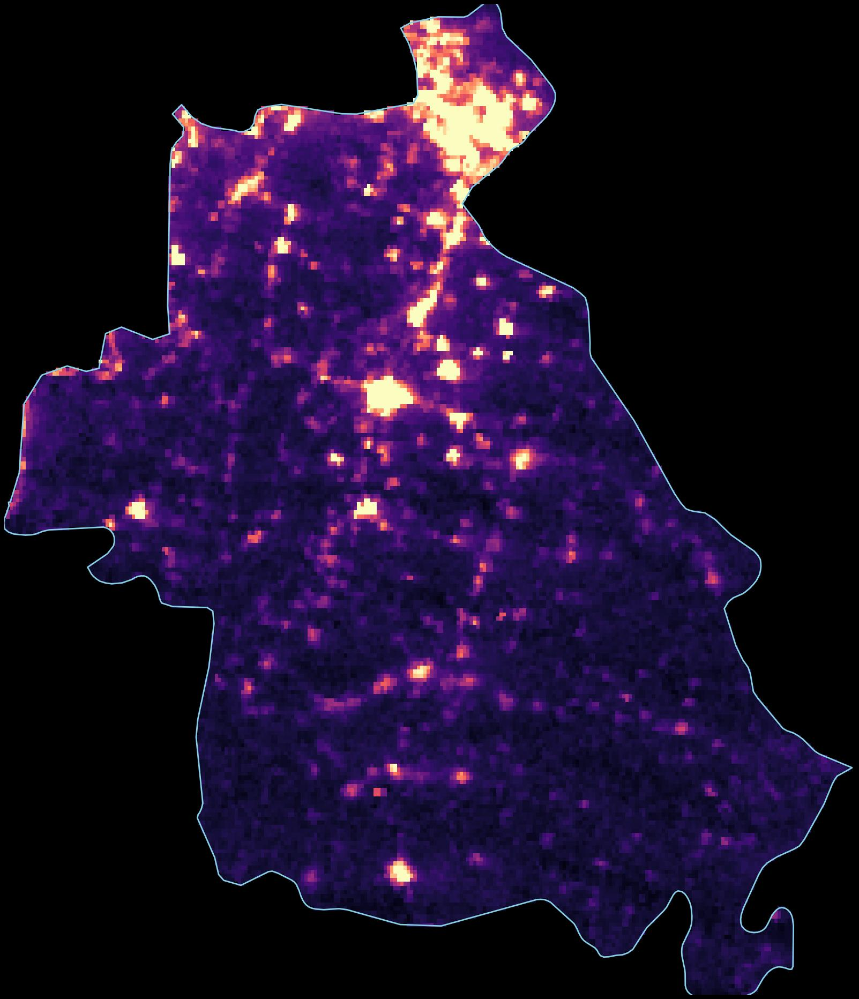
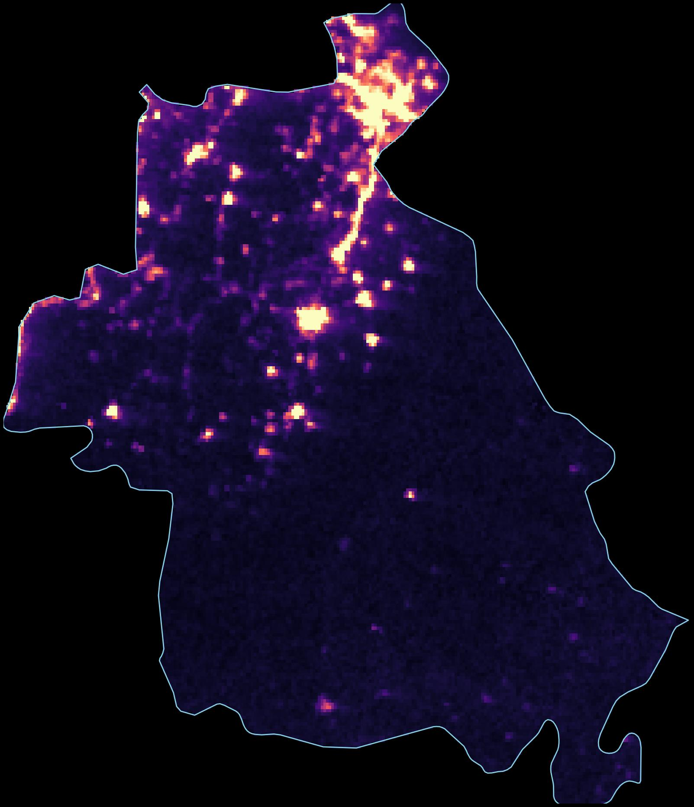
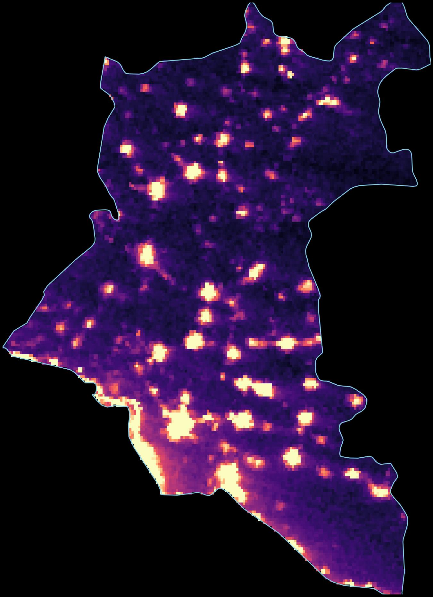
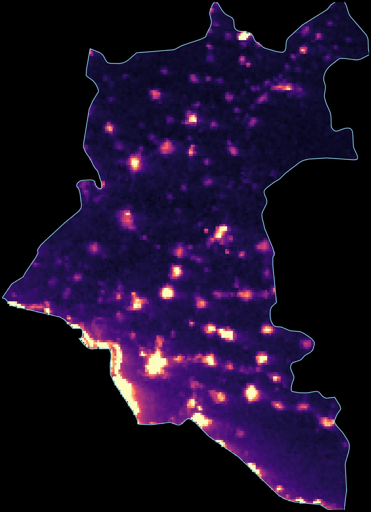
During the period covered by this analysis, Syria was effectively divided between the HTS-led transitional government (87 percent of the population, the western urban corridor) and the Kurdish-led SDF (the northeast, 89 percent of oil production). Both regions grew, but at vastly different rates. (The northeast has since mostly moved under government control in early 2026, though some areas are still integrating.)
Population-weighted NTL change: +20.0% → Estimated GDP growth: +5 to 15%
Population-weighted NTL change: +4.4% → Estimated GDP growth: +1 to 3%
The northeast was barely growing in 2025, at roughly a quarter the rate of government-controlled areas. The gap was driven by political uncertainty between Damascus and the SDF, disrupted oil supply chains, and less access to returning diaspora capital. Deir ez-Zor actually contracted (-3%). Within government territory, Homs (+1%) lagged significantly. As Suwayda' (-14%), which has never been fully under central government control, was the worst-performing governorate in the country.
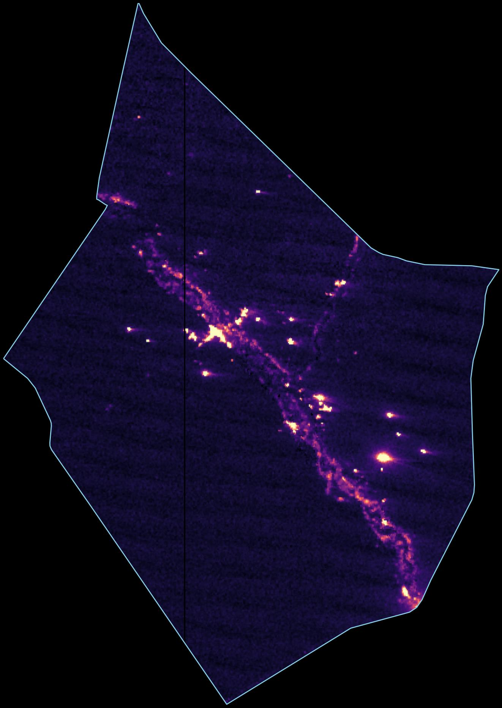
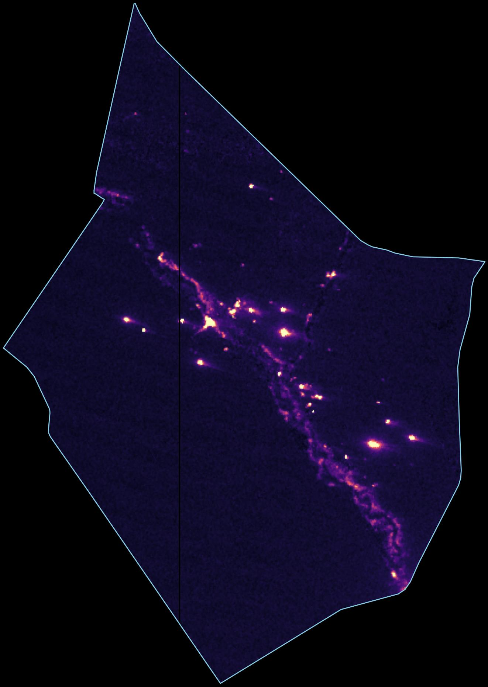
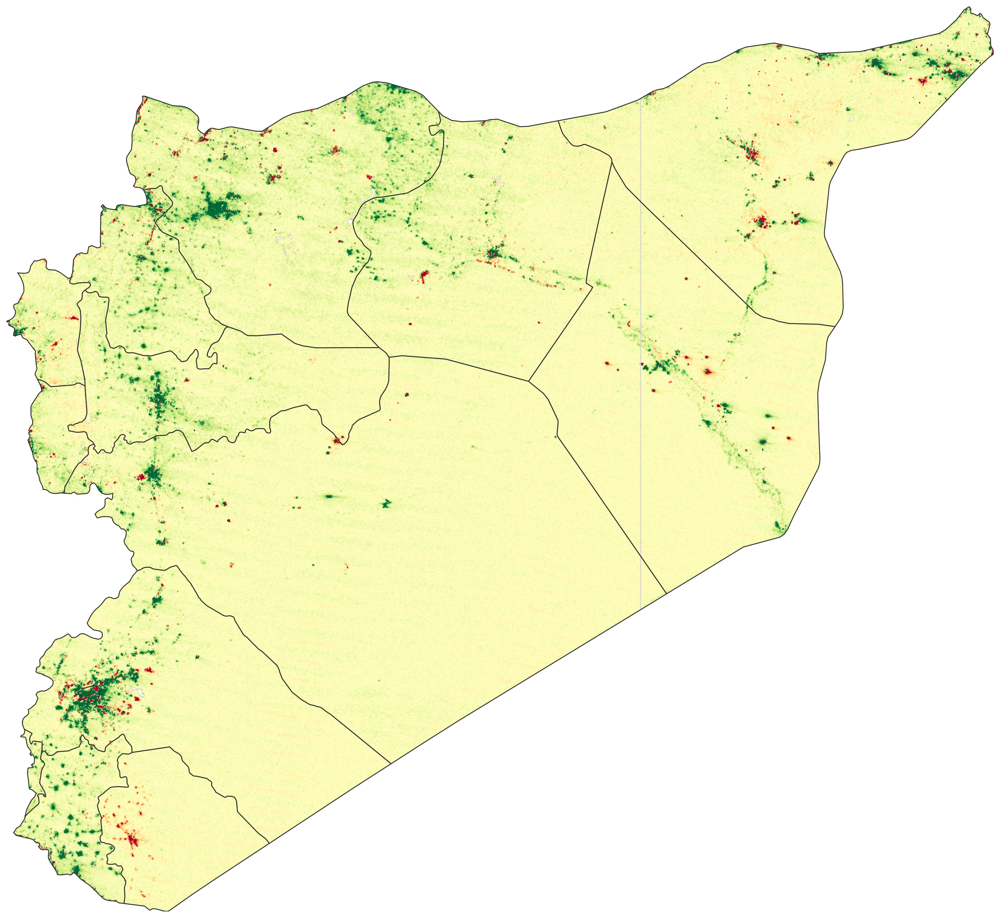
Converting light into GDP requires an "elasticity": how much does GDP change for a given change in light? Estimates range from 0.3 (Henderson et al., 2012) to 0.77 (Hu and Yao, 2022, correcting for measurement error). The choice swings the estimate from 5 to 14 percent:
| Elasticity Source | β | National (+17.9% NTL) | Gov. areas (+20.0% NTL) | Former SDF areas (+4.4% NTL) |
|---|---|---|---|---|
| Chen & Nordhaus (2011) | 0.28 | +4.7% | +5.2% | +1.2% |
| Henderson et al. (2012), baseline | 0.30 | +5.1% | +5.6% | +1.3% |
| Henderson et al. (2012), IV preferred | 0.35 | +5.9% | +6.6% | +1.5% |
| World Bank, Syria-specific (backed out) | 0.43 | +7.3% | +8.2% | +1.9% |
| Beyer, Hu & Yao (2022), IMF quarterly | 0.65 | +11.3% | +12.6% | +2.8% |
| Hu & Yao (2022), measurement-error corrected | 0.77 | +13.5% | +15.1% | +3.3% |
But satellites cannot see agriculture, and lights tend to bounce back faster than GDP during recovery (in Afghanistan, lights recovered even as survey-based GDP remained 28 percent below pre-takeover levels). The true figure is likely toward the lower end, but even the most conservative elasticity (β = 0.28) implies nearly 5 percent growth.
The SCPR's near-zero growth estimate rests on sectoral physical indicators: wheat harvests, oil output, cement production, electricity generation. Their finding that agriculture contracted 28 percent is likely correct, corroborated by the World Bank and FAO. Nighttime light cannot see agriculture.
But the SCPR's data has a deeper problem: its sources. The paper argues the transitional government produces unreliable statistics, yet its own sectoral figures come from that same government's ministries. After 14 years of war, Syria's statistical capacity is likely severely degraded. The Central Bureau of Statistics has reportedly lost much of its pre-war staff and infrastructure. Idlib was largely outside the state's reach for nearly a decade. The formerly SDF-administered northeast operated its own parallel institutions.
This is precisely the scenario where nighttime light data is supposed to be used. Since Henderson et al. (2012), NTL has become a standard tool for estimating economic activity in countries with weak or missing statistics. The World Bank, IMF and academic researchers use it routinely for conflict-affected states. The SCPR does not reference satellite data at all. For a paper claiming to measure GDP in a country where the statistical infrastructure has collapsed, the omission is difficult to justify.
When the SCPR reports cement production fell 5.1 percent, that figure can only reflect what hollowed-out ministries are able to count. It misses workshops reopening in Aleppo and informal construction across Idlib. In a country where the informal sector may constitute 50 to 70 percent of output, government statistics are not capturing the bulk of economic activity.
We can test the manufacturing claim directly. We extracted averaged radiance at four of Syria's major industrial zones from the clearest October nights (six in 2024, four in 2025), with per-pixel cloud masking. A fifth zone, Layramoun in Aleppo, is too small to resolve at VIIRS's ~500m resolution.
| Industrial Zone | Governorate | 2024 Radiance | 2025 Radiance | Change |
|---|---|---|---|---|
| Adra | Rif Dimashq | 3.7 | 5.3 | +45% |
| Sheikh Najjar | Aleppo | 2.8 | 4.4 | +61% |
| Hisya (Hassia) | Homs | 3.0 | 4.1 | +36% |
| Bab al-Hawa (Sarmada) | Idlib | 15.6 | 16.0 | +3% |
Three of the four zones grew substantially. Sheikh Najjar was up 61 percent. Adra, Syria's largest industrial zone, grew 45 percent across its full 8-mile footprint. Hisya rose 36 percent. Bab al-Hawa showed only 3 percent growth, though its compact footprint is near the limit of what VIIRS can resolve.
An important caveat: VIIRS can only detect manufacturing at large, concentrated industrial zones that are bright enough to register at ~500m pixel resolution. Smaller workshops, scattered manufacturing, and light industry distributed across residential areas are invisible at this scale. It is possible that large industrial zones are recovering while smaller, more distributed manufacturing (which the SCPR's data may better capture) is not. The satellite evidence contradicts the claim that all manufacturing shrank, but it cannot rule out a decline in the broader manufacturing base outside these major zones.
The SCPR reports that grid electricity grew from 17.5 to 18 billion kWh between 2024 and 2025, an increase of 2.9 percent. Their 2024 baseline appears to be wrong.
The most recent independently verifiable figure is 12,900 GWh (12.9 TWh) for 2023, from Ministry of Electricity data. If accurate, the SCPR's claim of 17.5 TWh for 2024 would imply a 36 percent increase in a single year. This is impossible to reconcile with reporting throughout 2024 describing Syria in severe electricity crisis, with supply averaging two to four hours daily.
Even if the 2025 figure of 18 TWh is roughly right, the denominator is almost certainly inflated, making the 2.9 percent growth rate meaningless. Meanwhile, after the Kilis-Aleppo natural gas pipeline opened on August 2, supply hours jumped from roughly two hours per day to six to eight. Damascus received 24 continuous hours as an experiment. Going from two hours of daily supply to eight is a fourfold increase, not a 3 percent one.
The SCPR cites recurring violence as a national economic headwind, specifically the coastal crisis and the Suwayda crisis of 2025. Our data confirms the Suwayda damage was severe: it is the only governorate with a double-digit decline (-14%), and the damage did not bounce back. Luminosity in Q3 and Q4 2025 remained well below the same quarters in 2024. As Suwayda' has never been fully under central government control, its distance from Damascus may have limited reconstruction resources.
But the effects were geographically contained. Neighboring Dar'a (+35%), Lattakia (+14%) and Tartus (+20%) all grew through the same period. The coastal crisis, while real, did not register as a sustained luminosity decline in either governorate.
The Bank also uses VIIRS data and derives its own Syria-specific elasticity. We can back it out: their NTL shows an 83 percent decline (2010-2024) against a 53 percent GDP decline, implying β ≈ 0.43. Applied to our data, that gives 7.3 percent growth.
But the Bank forecasts only 1 percent. Their data runs only through May 2025, before the recovery accelerated. They also discount the NTL signal for infrastructure effects (grid damage, solar substitution) and blend with agricultural and trade data. This is arguably more careful, but the discount is never quantified.
Our satellite-derived estimate places real GDP growth at 5 to 14 percent nationally, depending on the elasticity used. For the 87 percent of Syrians under transitional government authority, 5 to 15 percent. For the formerly SDF-administered northeast, 1 to 3 percent, barely growing and a fraction of the government-controlled rate.
The SCPR is probably right about agriculture. On manufacturing, the picture is mixed: the three largest industrial zones we checked grew substantially, led by Sheikh Najjar (+61%) and Adra (+45%), but satellites cannot see smaller workshops or distributed light industry. Its electricity baseline does not hold up. And its data sources, drawn from decimated ministries that never controlled much of the territory they report on, cannot capture the informal recovery visible from space.
Data source: NASA VNP46A1 (VIIRS Day/Night Band) daily granules, downloaded via NASA Earthdata (EDL). Each granule covers a 10°×10° tile at ~500m resolution. Syria requires two tiles: h21v05 and h22v05.
Processing: HDF5 files are converted to 2-band GeoTIFFs (radiance + cloud mask). Each governorate's luminosity is the sum of radiance values across all pixels within its administrative boundary, using GADM-level shapefiles.
Quality filtering: We exclude observations where per-municipality cloud cover ≥ 0.2, lunar illumination > 30%, the satellite swath edge overlaps the municipality, or luminosity is zero or negative. This matches the pipeline described in Henderson et al. (2012) and the World Bank's own NTL methodology.
Aggregation: We average all clean daily observations within each quarter to produce four quarterly means per governorate per year. We then compare the second half of 2025 (average of Q3 and Q4 means) against the same period in 2024. This H2-vs-H2 comparison avoids seasonal bias and reduces the influence of the anomalous Q2 2025 spike visible across all governorates.
GDP estimation: We use the log-log specification from Henderson et al. (2012): %ΔGDP = (1 + %ΔNTL)β − 1, with β values ranging from 0.28 (Chen & Nordhaus 2011) to 0.77 (Hu & Yao 2022, measurement-error corrected). Country-level NTL change is computed as a population-weighted average of governorate-level changes.
Date range: January 1, 2024 through December 2, 2025 (978 total daily observations, ~60–85 clean observations per governorate per year after filtering).
Limitations: NTL does not capture agricultural output, subsistence economies, or underground economic activity. Elasticity estimates are borrowed from cross-country studies and may not apply to Syria's specific conflict-to-recovery transition. Results should be interpreted as indicative of trends, not precise measurements. Comparison images are averaged across multiple clear October nights with per-pixel cloud masking; the statistical analysis uses all clean observations year-round.
MENA Nighttime Lights Analysis Project · Data updated through December 2025 · Analysis performed April 2026